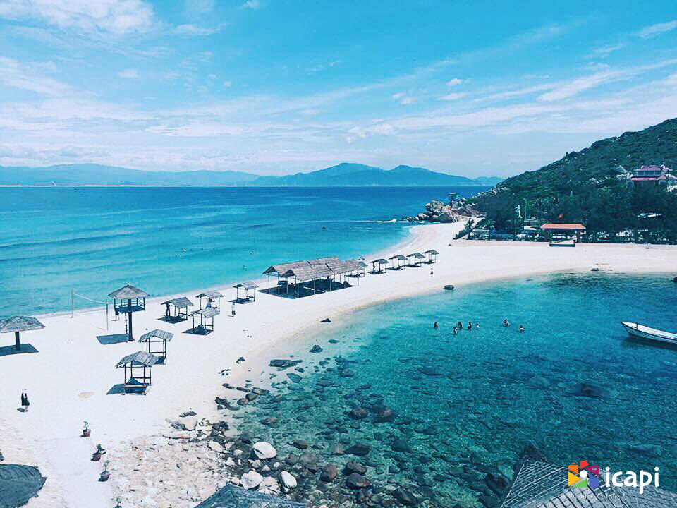

VÒNG QUANH VIỆT NAM

Chào mừng đến với Nha Trang!
Là một trong những thiên đường du lịch biển nổi tiếng nhất Việt Nam, thành phố Nha Trang luôn lựa chọn hàng đầu mỗi khi ai đó cần nạp chút không khí biển. Không chỉ có biển đảo mênh mông, Nha Trang còn là điểm đến cho những ai yêu văn hóa, lịch sử bởi nơi đây còn lưu lại rất nhiều trầm tích của vương quốc Chăm hưng thịnh khi xưa.
Nha Trang mùa nào đẹp?
Khí hậu ở Nha Trang tương đối ôn hòa, với mùa khô kéo dài từ tháng 1 đến tháng 8, không có mùa đông lạnh. Do đó du khách có thể tới đây du lịch quanh năm. Từ tháng 4 đến hết tháng 6, trời nắng và nóng nhiều hơn, nhưng không quá oi bức.Tháng 9 trời bắt đầu có mưa rải rác, nên không ảnh hưởng quá nhiều đến hoạt động vui chơi của du khách. Từ tháng 10 đến tháng 12, trời mưa nhiều hơn, có thể kèm theo không khí lạnh. Đây không còn là mùa cao điểm của du lịch nội địa tại Nha Trang, nên phù hợp với những du khách muốn nghỉ dưỡng yên tĩnh.
Ngay tại trung tâm thành phố Nha Trang, du khách đã có thể thỏa thích khám phá nhiều địa điểm du lịch lý thú như:
Chơi đâu?
Bãi biển
Bãi biển Nha Trang chạy dài theo dọc thành phố, chỉ cần đi bộ từ đường Trần Phú là có thể đến biển. Tuy nhiên điểm tập trung đông người tắm nhất là ở khu vực quanh tháp Trầm Hương. Bãi biển của thành phố được nhiều du khách đánh giá là trong, sạch, cát vàng mịn.Đảo trong vịnh Nha Trang mang những vẻ đẹp riêng, với làng chài, bãi tắm đôi hoang sơ, "vương quốc" của loài khỉ hay rạn san hô nhiều màu sắc.
Hòn Chồng ở đường Phạm Văn Đồng, cách trung tâm thành phố khoảng 3 km về hướng Đông Bắc. Nơi đây là một quần thể khối đá lớn với đủ loại hình thù, xếp chồng lên nhau chạy từ bờ cao xuống biển. Địa điểm du lịch này cũng là một trong những nơi đẹp nhất để ngắm nhìn thành phố biển, không khí trong lành, yên tĩnh.

Đảo Khỉ - Hòn Lao là điểm tham quan đặc biệt, với khoảng 1.500 con khỉ sinh sống trong rừng. Đi dạo đảo, du khách có thể bắt gặp chúng ở bất cứ đâu. Hầu hết các con khỉ ở đây đều thân thiện với người, tuy nhiên du khách cần lưu ý vì chúng thường lại gần để lấy cắp đồ ăn.
